Thanjavur , also known asThanjai, previously known as Tanjore, is a city in the Indian state of Tamil Nadu.
It is the 11th biggest city in Tamil Nadu and biggest and most populous city in delta region.
Thanjavur is an important center of southern Indian religion, art, and architecture.
Most of the Great Living Chola Temples, which are UNESCO World Heritage Monuments, are located in and around Thanjavur.
The foremost among these, the Brihadeeswara Temple, built by the Chola emperor Rajaraja I, is located in the centre of the city.
 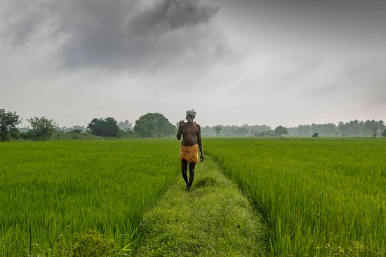
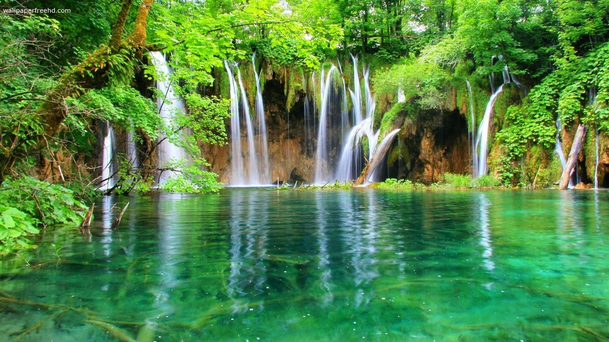
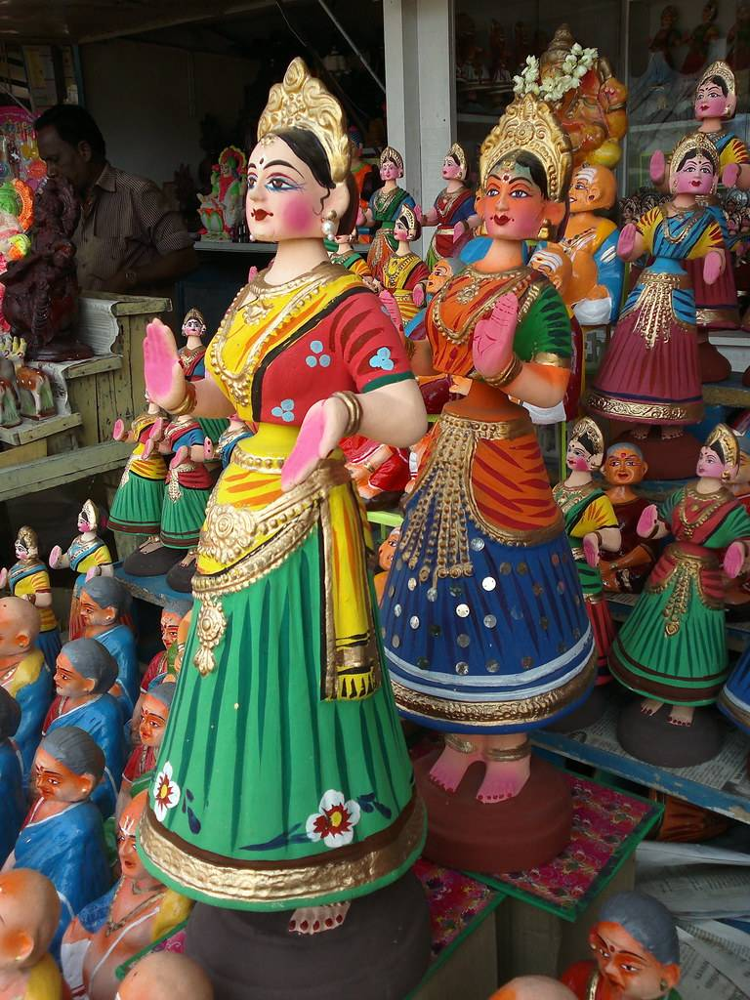
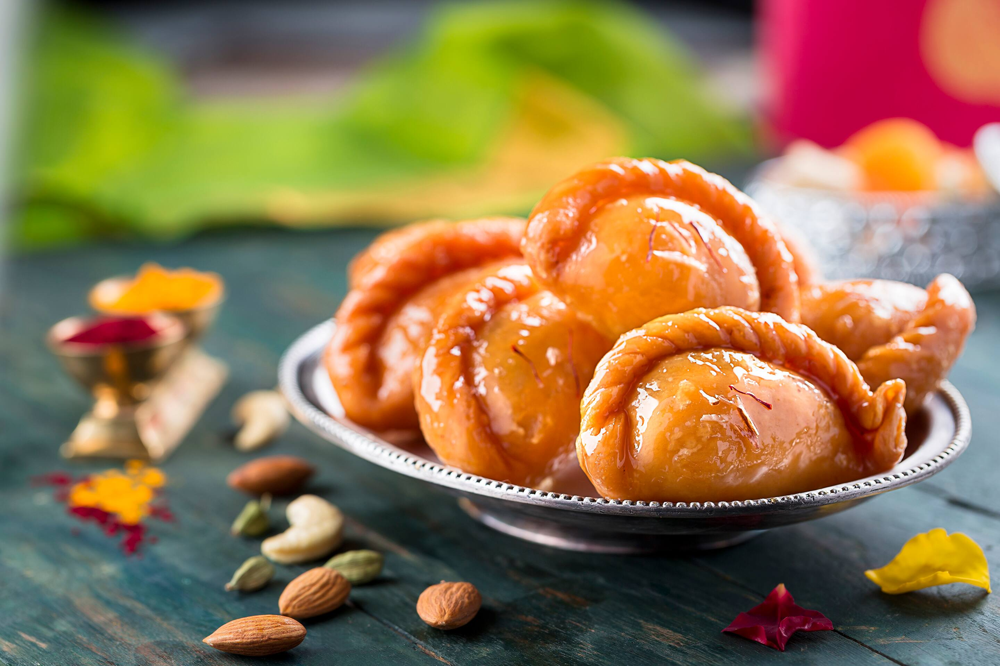
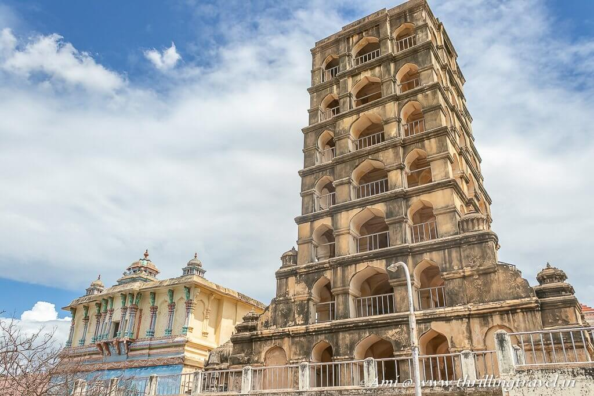
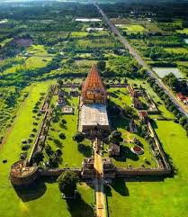
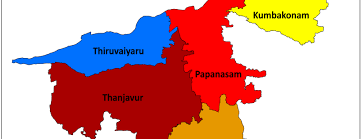
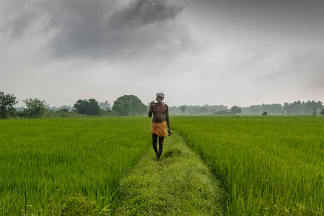
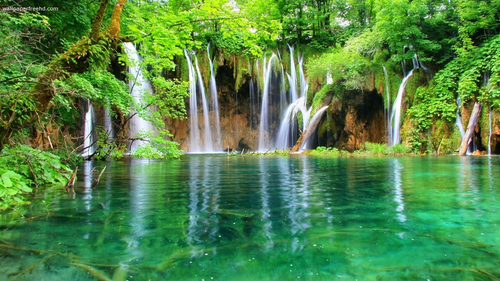
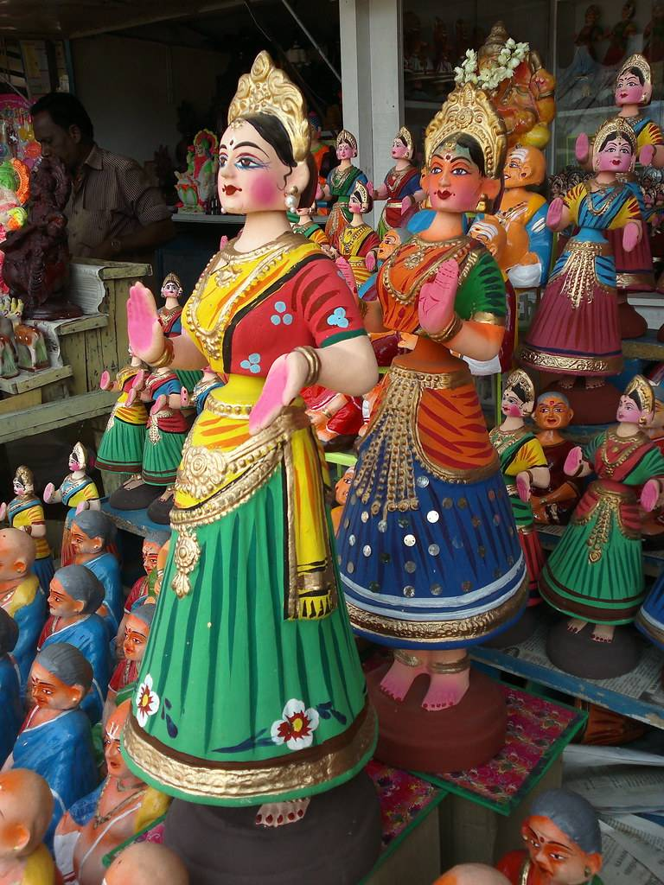
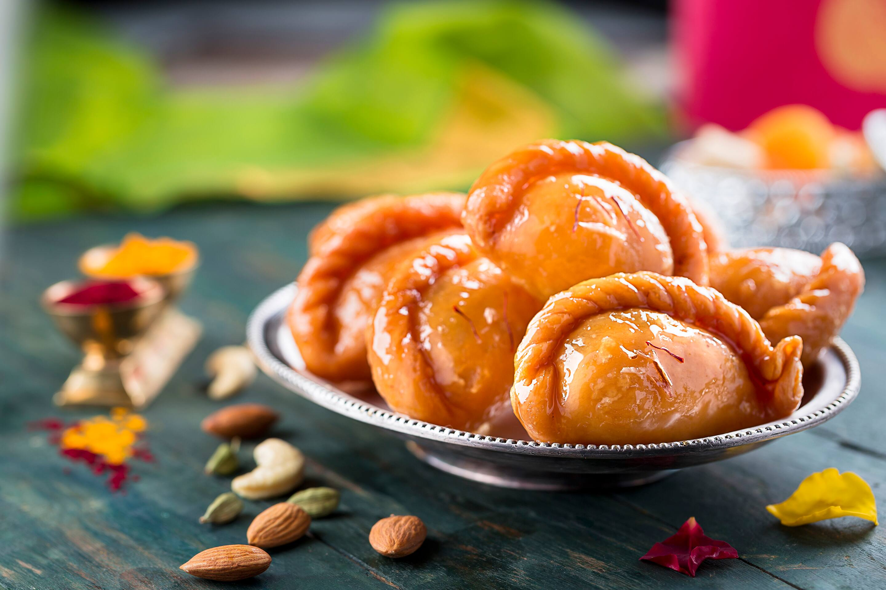
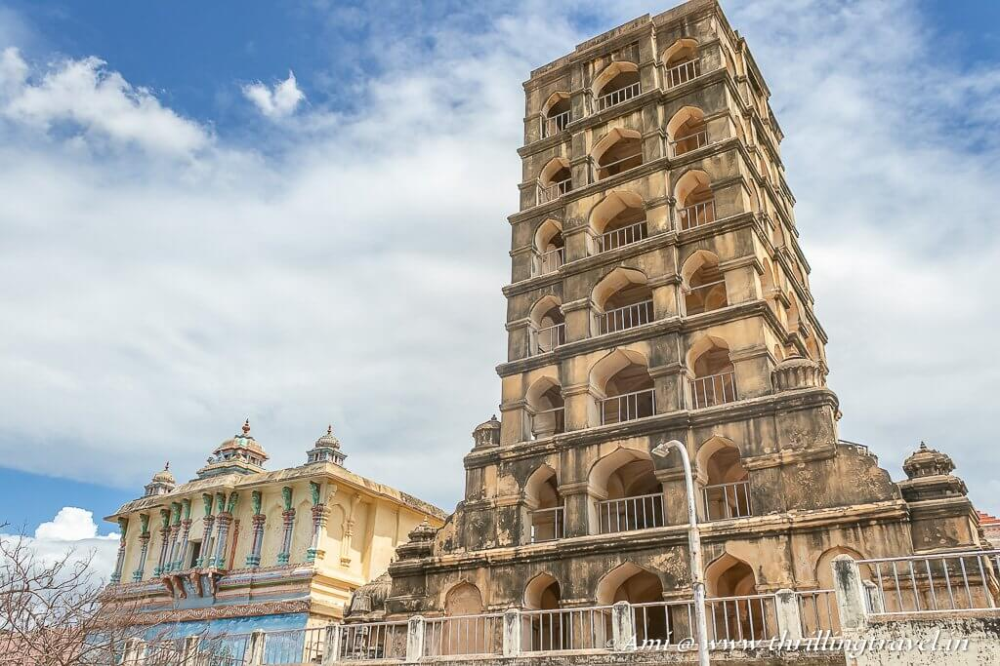
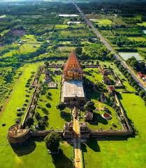
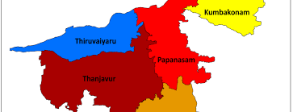
Thanjavur attained prominence under the Chola rulers who were paramount in South India during 9th to 12th centuries.
They were not only excellent rulers but also mighty builders, who erected a large number of exquisite temples in their empire, some of which constitute the finest specimens of architecture
Brihadishvara Temple, called Rajarajesvaram by its builder, and known locally as Thanjai Periya Kovil and Peruvudaiyar Kovil, is a Shaivite Hindu temple built in a Chola architectural style located on the south bank of the Cauvery river in Thanjavur, Tamil Nadu, India.
It is one of the largest Hindu temples and an exemplar of Tamil architecture. It is also called Dakshina Meru (Meru of the South).
Built by Chola emperor Rajaraja I between 1003 and 1010 CE, the temple is a part of the UNESCO World Heritage Site known as the "Great Living Chola Temples", along with the Chola-era Gangaikonda Cholapuram temple and Airavatesvara temple, which are about 70 kilometres (43 mi) and 40 kilometres (25 mi) to its northeast respectively.
The original monuments of this 11th-century temple were built around a moat.
It included gopura, the main temple, its massive tower, inscriptions, frescoes, and sculptures predominantly related to Shaivism, but also of Vaishnavism and Shaktism.
The temple was damaged in its history and some artwork is now missing.
Additional mandapam and monuments were added in the centuries that followed.
The temple now stands amidst fortified walls that were added after the 16th century.
Gaṅgaikoṇḍa Chōḻapuram is a village located near to Jayankondam, Ariyalur district, Tamil Nadu, India.
It became the capital of the Chola dynasty in c. 1025 by Chola emperor Rajendra I, and served as the capital for around 250 years.
The town is about approximately 125 kilometres (78 mi) northeast of Tiruchirapalli international airport. As of 2014, the ancient city exists as a heritage town in the Ariyalur district of Tamil Nadu, India.
The great Arulmigu Peruvudaiyar Temple at this place is next only to the Arulmigu Peruvudaiyar Kovil at Thanjavur in its monumental nature and surpasses it in sculptural quality.
It has been recognised as a World Heritage site by UNESCO
The Thanjavur Maratha palace was originally constructed by the rulers of Thanjavur Nayak kingdom.
After the fall of the Thanjavur Nayak kingdom, it served as the official residence of the Thanjavur Marathas.
When most of the Thanjavur Maratha kingdom was annexed by the British Empire in 1799, the Thanjavur Marathas continued to hold sway over the palace and the surrounding fort.
The Bhonsle family continued to hold on to the palace even after the last king, Shivajiof Thanjavur.
| RELIGION | PERCENTAGE |
|---|---|
| Muslim | 8.34% |
| Hindu | 82.84% |
| Christian | 8.58% |